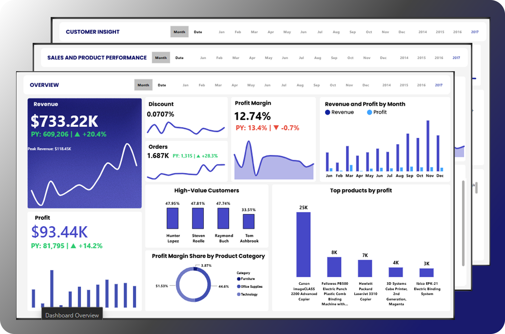

Investigating why profit margin declined despite record revenue growth by analyzing product performance, customer behavior, pricing strategy, discounts, and regional profitability.
Although the company achieved record revenue growth in 2017, profit margin declined from 13.43% in 2016 to 12.74% in 2017. Management wanted to understand what caused profitability to fall despite increasing sales and customer growth.
Revenue reached its highest level in company history, increasing to $733.22K. However, higher sales did not translate into proportional profitability.
Canon ImageCLASS 2200 Advanced Copier generated the highest revenue and profit. However, Binders and Machines significantly reduced overall profit margin despite contributing substantial sales volume.
Consumer customers generated the highest revenue while Corporate customers produced the lowest profit margin. Revenue growth increasingly came from lower-margin customer segments.
California remained the most profitable state, while Wyoming generated the lowest overall profit, indicating regional profitability differences.
Average Selling Price declined from $61.93 to $58.77 while average discount increased to 7.07%, reducing profitability across many transactions.
The analysis demonstrates that revenue growth alone is not an indicator of business success. By identifying the products, pricing strategies, customer segments, and regions responsible for margin erosion, management can improve profitability while maintaining sustainable sales growth.
Interactive dashboard used to perform the analysis.

View Interactive Power BI Dashboard